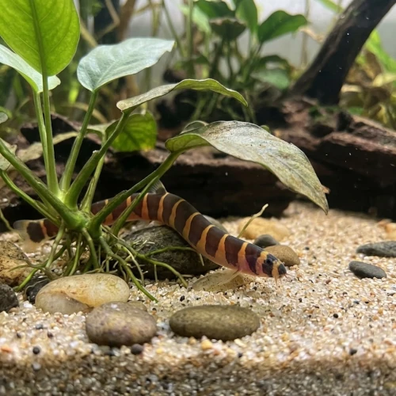

Nome popular principal
Cobrinha Kuhli
Cobrinha Kuhli, Kuhli Loach, Peixe-Cobrinha, Cobrinha-Kuhli
Ficha de peixe
Cobitídeos e Limpa-Fundos
Um habitante de fundo exótico e inofensivo, famoso por seu corpo serpentiforme estriado e pelo hábito fascinante de enterrar-se na areia.

Nome popular principal
Cobrinha Kuhli, Kuhli Loach, Peixe-Cobrinha, Cobrinha-Kuhli
Nome científico
Nome técnico essencial para taxonomia, cruzamento de manejo e referência editorial consistente.
Dificuldade de manejo
Use este nível como referência inicial, sempre considerando volume, estabilidade e compatibilidade do aquário.
Seção 1
Seção 2
Seções 4 a 6
Cobrinha Kuhli tem hábito alimentar onívoro. Excelente. 1 a 2 vezes ao dia (preferencialmente à noite). Alimenta-se com eficiência no fundo do aquário, consumindo restos de ração, pastilhas afundantes e pequenos alimentos vivos como vermes e artêmias.
Fêmeas adultas são visivelmente mais robustas e encorpadas, podendo revelar ovos esverdeados sob o abdômen; machos têm nadadeiras peitorais ligeiramente maiores. Tipo de reprodução: Ovíparo. Dificuldade de reprodução: Avançado. A reprodução em cativeiro é rara e geralmente acidental, ocorrendo a liberação de ovos esverdeados aderidos às raízes de plantas flutuantes.
Alta. Substrato recomendado: Areia fina e macia sem arestas pontiagudas. Necessidade de esconderijos: Alta. O uso de areia fina de rio é obrigatório para evitar ferimentos na sua pele delicada e barbilhões sensíveis enquanto se enterra.
Seção 7
Possui corpo esguio e habilidade de explorar frestas mínimas; proteja as entradas da filtragem para evitar que entre no filtro.
Seção 8
Não, é um peixe completamente inofensivo e Pacífico, incapaz de atacar qualquer outro habitante do aquário.
Enterrar-se no substrato macio é um comportamento natural de defesa, descanso e termorregulação da espécie na natureza.
Deve-se usar exclusivamente areia fina e macia de rio, pois cascalhos grossos ou substratos pontiagudos ferem sua pele e barbilhões.